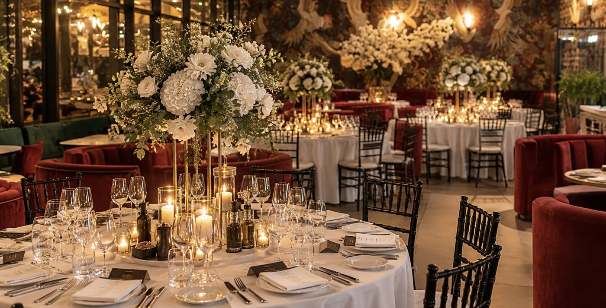
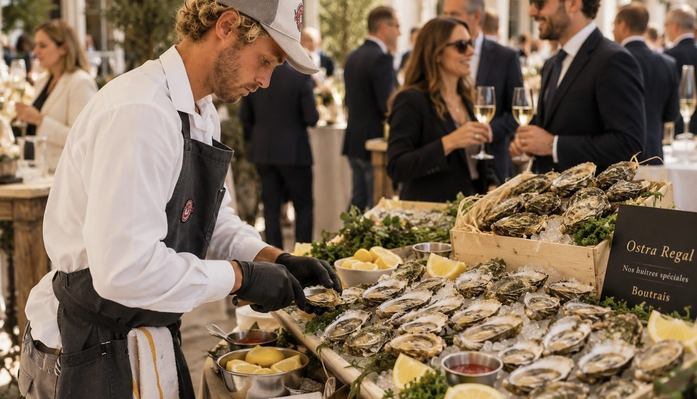
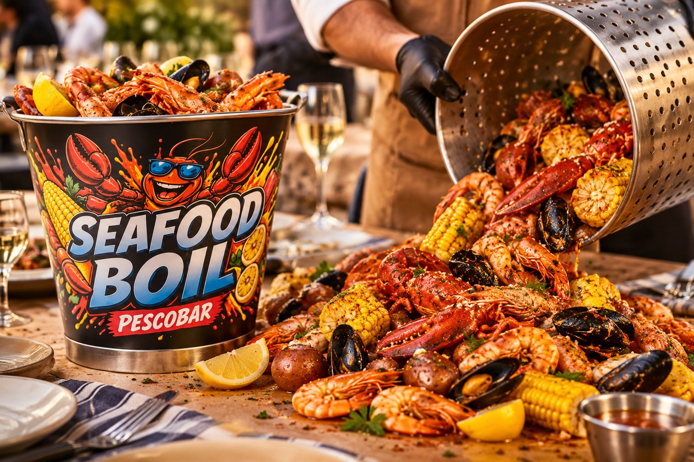
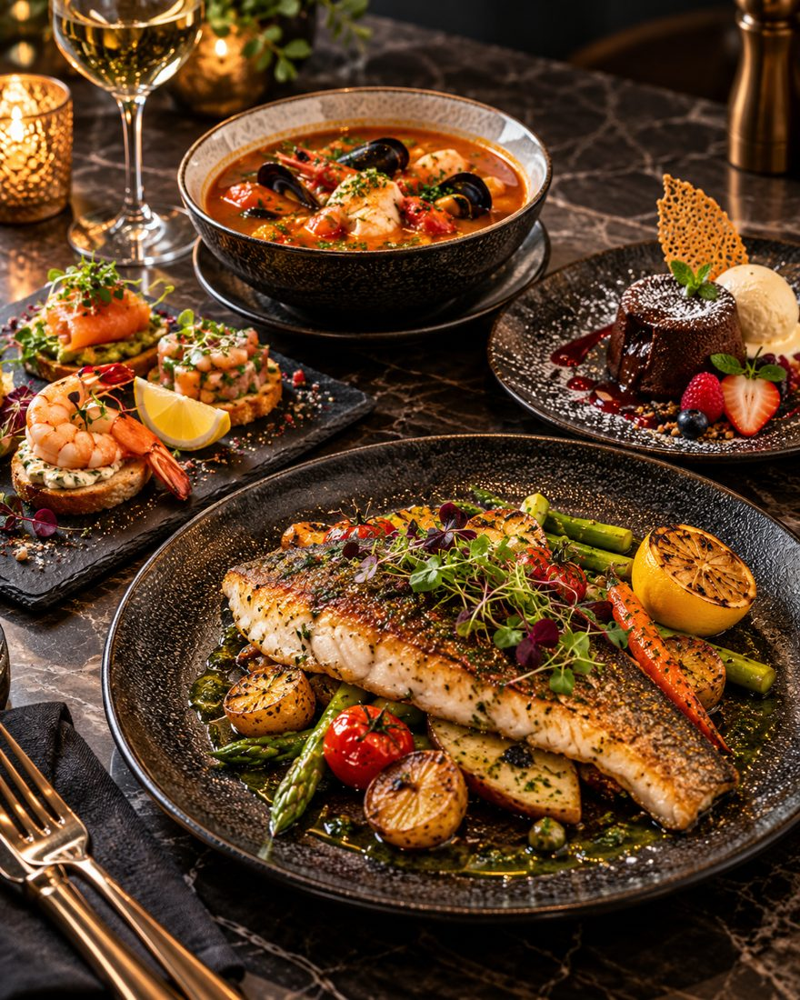

Conferințe și seminarii
O conferință sau un seminar funcționează mai bine când participanții sunt bine hrăniți și nimeni nu pierde timp cu logistica. La Taverna Racilor, Iulius Mall Cluj, le oferim un loc unde se pot opri, mânca și continua ziua cu energie.
Meniul se adaptează numărului de participanți, programului și preferințelor alimentare, anunțate cu cel puțin 3 zile înainte, iar grupul are o zonă separată, servită de o echipă dedicată.
Spuneți-ne data, numărul de participanți și formula dorită, iar noi revenim cu propunerea finală și valoarea estimată.

Oyster Bar & Caviar
Stridii proaspete pe gheață, cu lămâie și sosuri, alături de caviar. Un început elegant pentru recepția de bun venit.
Descoperă →
Seafood Boil
Experiența semnătură a casei: conținutul oalei este turnat direct pe masă, în fața întregii echipe.
Descoperă →
Meniu clasic
Gustare de bun venit, ciorbă pescărească, fel principal individual de pește și desert, cu preț fix pe persoană.
Vezi pachetele →Gata să începem?
Orice eveniment reușit începe cu o conversație. Spune-ne ce plănuiești și ne ocupăm noi de restul.
Hai să lucrăm împreună
Contactează-ne© 2026 Taverna Racilor Cluj